Upon downloading the Main-files.zip file from Themeforest, you'll have all files you need inside. Zip file contains the following files
- Assets contains all free assets for tailoring online
- Demo-Content contains an XML file for demo contents.
- Documentation folder (It contains documentation for plugin)
- Plugin folder contain plugin installable files
- readme.txt file for general informations
To install this plugin you must have a working version of WordPress already installed. For more information regarding installing the WordPress platform, please see the WordPress Codex
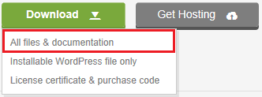Alternatively you can simply download the installable WordPress file.

When you are ready to install a plugin, you must first upload the plugin files and then activate the plugin. For this purpose, unzip the file that you downloaded from themeforest and there you would find plugin (tailors-online) file and upload it via WordPress installer. The plugin files can be uploaded in two ways
WordPress Upload
- Navigate to Plugins > Add New
- Upload Plugin and choose file then "Install Now"
- The plugin will be uploaded and installed
- Then Activate plugin
After Installation and activation you will move to plugins page.
Required Plugins
Please note : WooCommerce Plugin should be installed and activated
Import Demo Contents
To import demo contents, please follow given below steps
- Go to Tools > Import
- Install WordPress Plugin for demo import
- After installation Run Importer
- Select demo.xml which is present in downloaded packages and install it
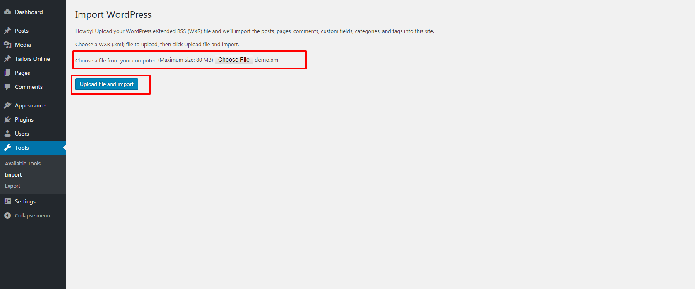
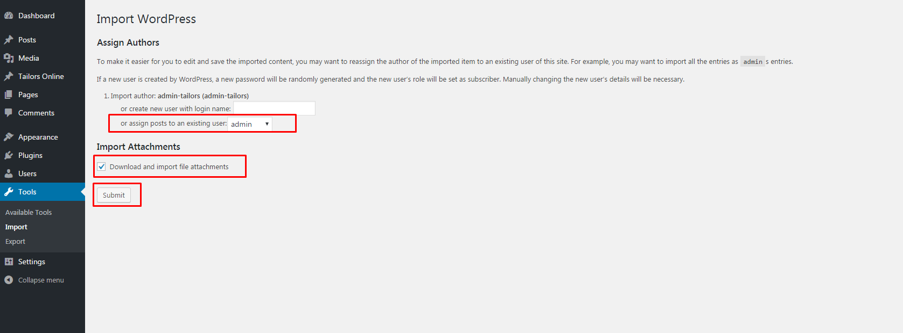
Please note : After installation, reset permalinks.
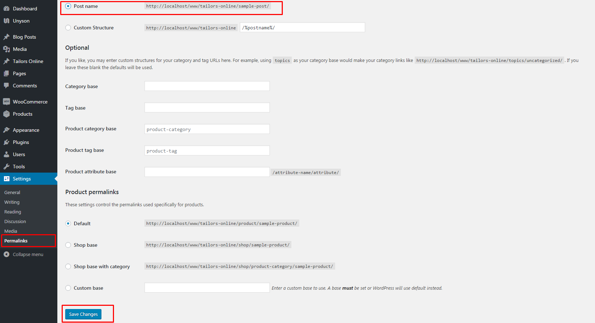Translation
To translate plugin any any language, please install loco translate plugin
- Install Loco Translate plugin
- Go to Loco Translate > Plugins > Tailors Online
- Add your language and start translations
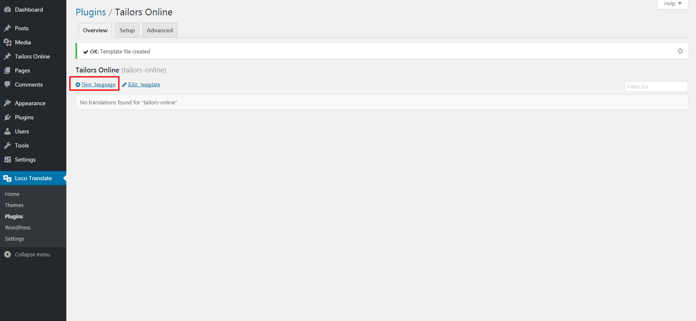
General Settings
You can set setting for customizer.
- You can enable customizer option.
- You can add button text for customizer. Which will be shown at product detail page.
- You can hide or show measurements in customized order.
- Enable customizer at detail page will show all steps at product detail page. After selecting steps you can click on add to cart button which will attach your custom steps with order.
- Now you can change plugin theme color at front-end according to you choice. Just select color and save it.
When customizer will be enabled then a dropdown for all created customizers will be in shown in products. each product can have single customizer at a time.
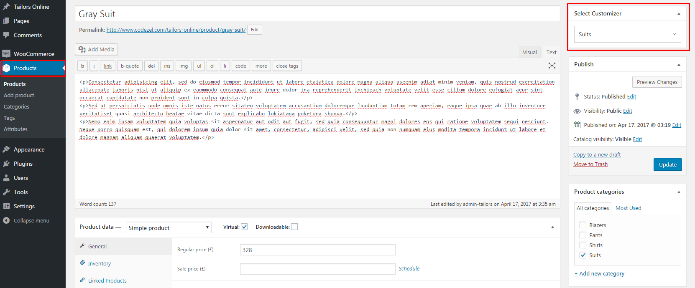Manage Customizer
Customizer is a full process for online customized order. For example you can create Suits, Balazers, Shirts and pants customizer
- Customizer need styles, either Class or Slim
- Customizer can have multiple apparels. Apparels mean a complete step for order. Like In Suits, blazer can be full step.
- Each Apparels can have two default images for front and back. For example a blazer have two views front view and back view.
- Each Apparels can have mutiple steps. Like A blazer can have lapels, buttons style, pockets and vents
- Each step have options as : IS FRONT or IS BACK, which means This step will fit at front view or back view.
- Each Customizer can have multiple measurements. Meaurements will be shown in checkout and cart pages.
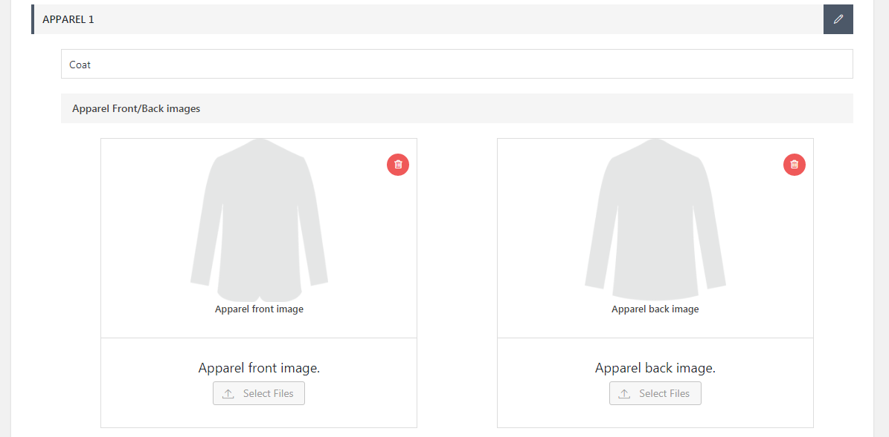
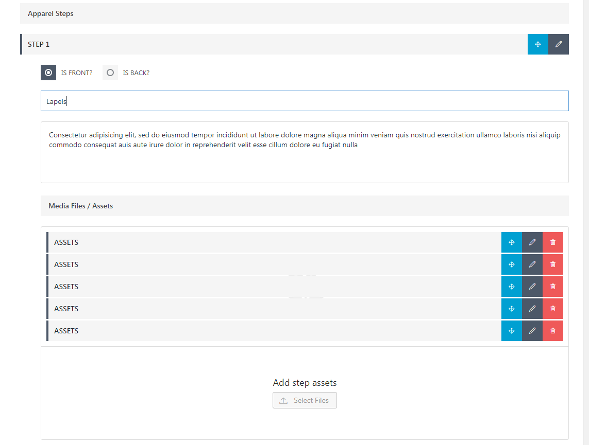
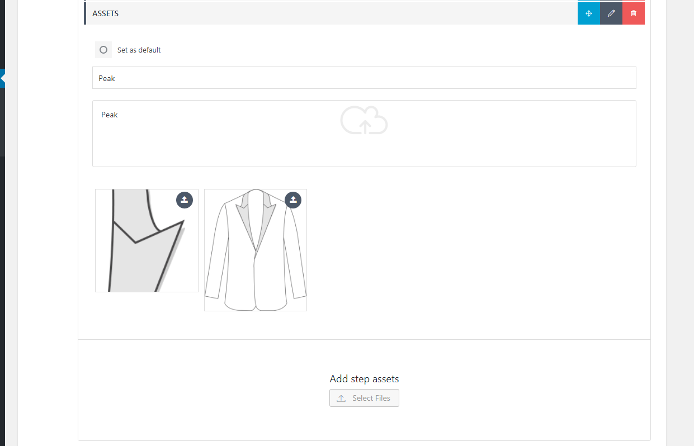
Manage Measurements
Meaurements are for customized order. Each Customizer can have multiple measurements, each measurement have options to upload multiple images and also video options
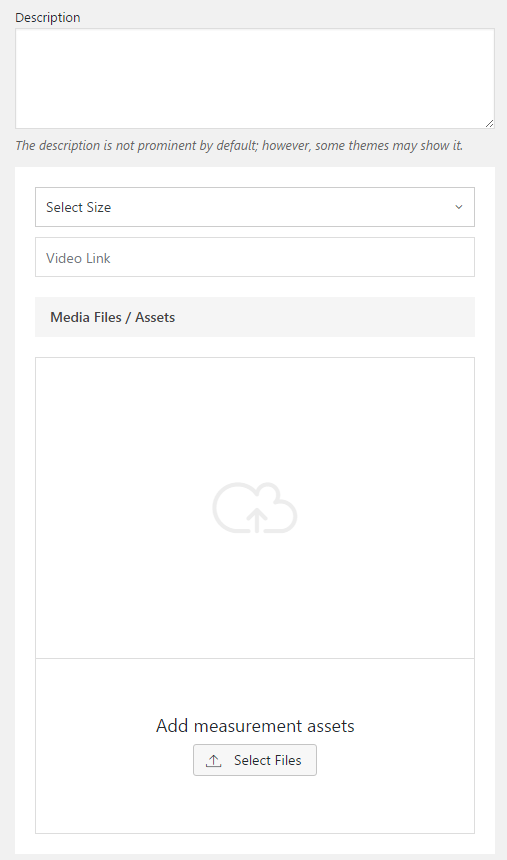Front End Steps
There are 4 steps for customized order.
- Select Fabric
- Customize Garment
- Add measurements (if enabled from settings)
- Receive Order
Step 1
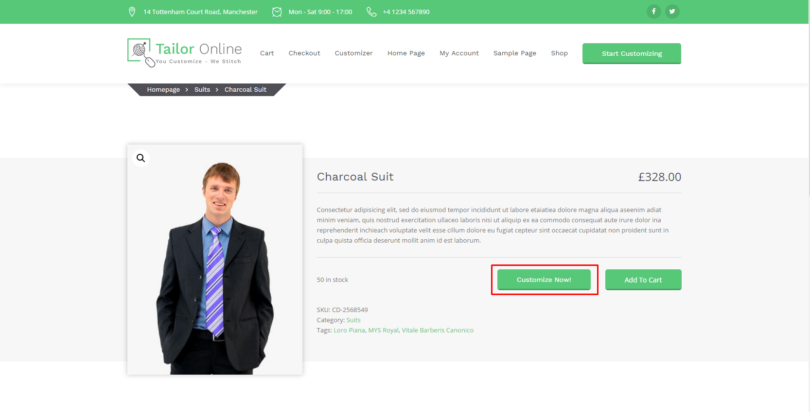Step 2
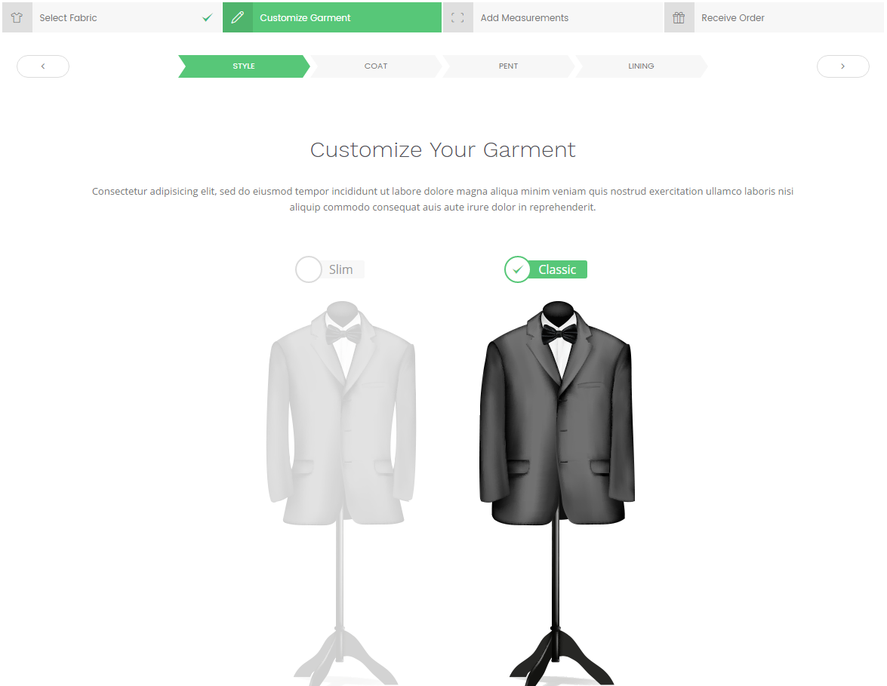Step 3
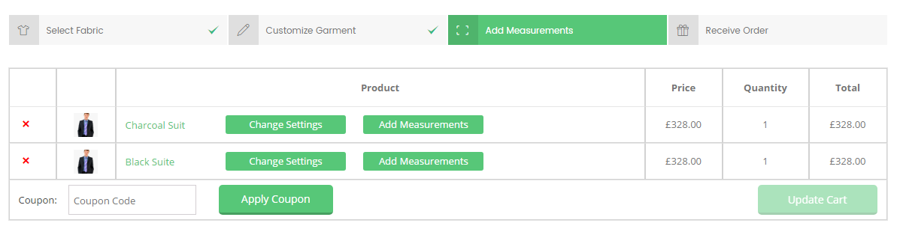Step 4
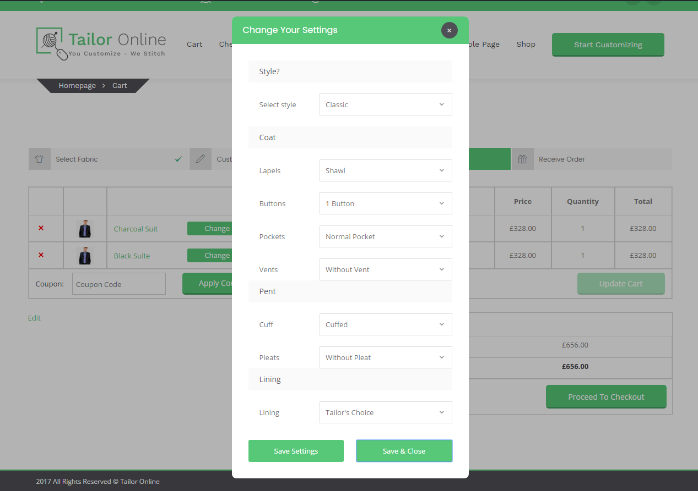Step 5
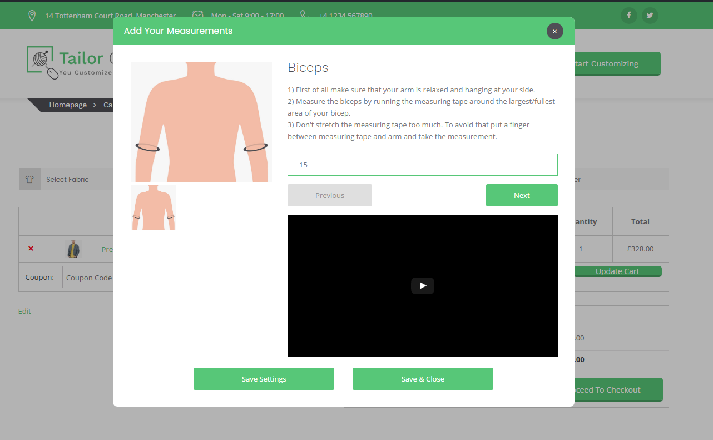Step 6
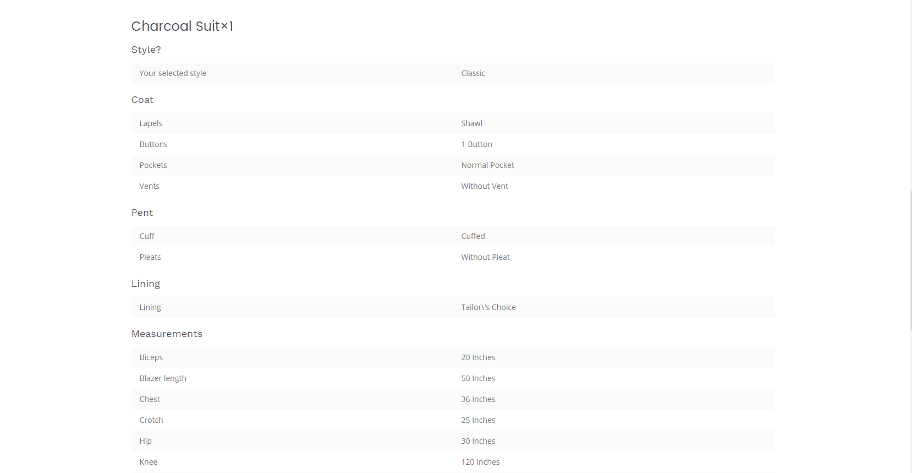Step 7
Admin Can view order detail at back-end
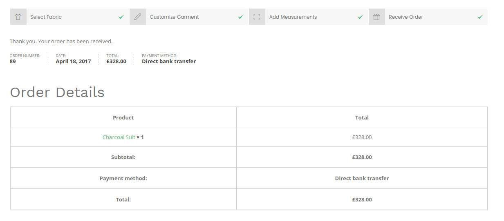Step 8
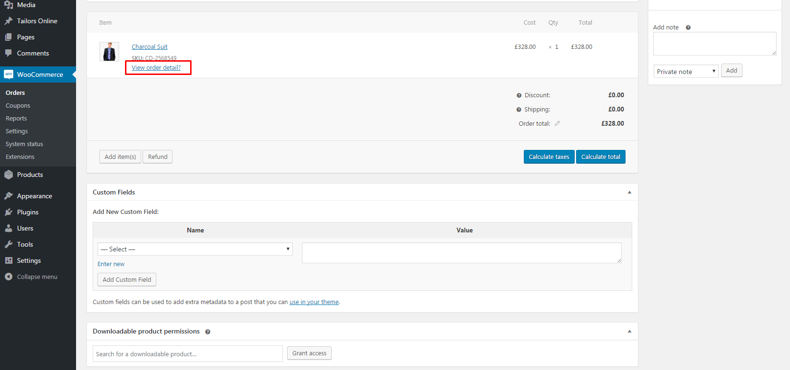Step 9
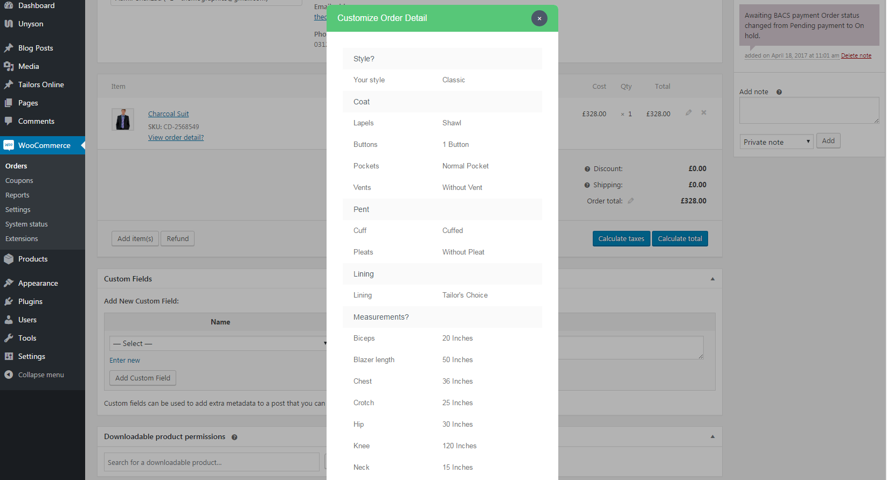Since Version 1.0
Released on 25 April 2017
- Released Tailors Online - WooCommerce Extension for online tailoring
Once again, thank you so much for purchasing this plugin. As I said at the beginning, I'd be glad to help you if you have any questions relating to this plugin. No guarantees, but I'll do my best to assist. If you have a more general question relating to the plugin, you might consider visiting the forums and asking your question in the "Item Discussion" section.